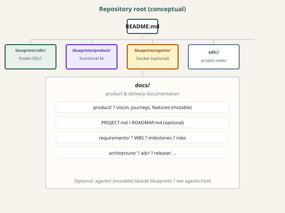

Documentation layout & work hierarchy
Repo shape, document types, and the milestone → epic → story → task tree from the blueprint. Scope management (when backlog changes) is covered in Change control. For how specs drive delivery (acceptance criteria, docs↔code loop, agents), see Spec-driven development.
Principles
Docs as code, just enough, single source of truth, SDLC-bound artifacts, traceability via stable IDs when used.
Repository split

Document types (typical)
| Type | Typical location | When |
|---|---|---|
| Product / setup | Root README.md | New setup steps, user-facing features. |
| Project profile | docs/PROJECT.md | Stack, where planning lives. |
| Planning / WBS | docs/requirements/WBS.*; optional docs/ROADMAP.md | Scope and status changes. |
| Risks | docs/requirements/risks/… | New risk, mitigation, closure. |
| Specs | docs/requirements/milestones/… | When items are specified or change. |
| Traceability | docs/requirements/traceability/*.csv | Themes/tests mapping. |
| Development / CI/CD | docs/development/ | Build, pipelines, quality gates. |
| Testing / test plans | docs/testing/ (optional) | Scope-level strategy; per-milestone plans when useful. |
| Architecture / ADRs / release | docs/architecture/, docs/adr/, docs/release/ | As complexity grows. |
Work breakdown hierarchy
Spec-driven planning uses a nested hierarchy so IDs, folders, WBS rows, and traceability line up. Names and digit padding are customizable—capture your rules in a STRUCTURE-PROPOSAL (or equivalent) in the consuming repo.
Nesting (outside → inside)
-
Milestone — time- or theme-bound slice (release train, quarter, major capability).
-
Epic — large outcome; groups related stories.
-
Story — acceptance criteria, sized for delivery.
- Task — implementation slice (often PR-sized); optional files per task.
-
Story — acceptance criteria, sized for delivery.
-
Epic — large outcome; groups related stories.
Levels & “done”
| Level | Purpose | Typical “done” |
|---|---|---|
| Milestone | Bounds a chunk of delivery. | Accepted when agreed scope is met or descoped; planning views updated. |
| Epic | User- or business-visible capability umbrella. | All in-scope stories done; residual risks accepted or closed. |
| Story | Unit with acceptance criteria. | Per Definition of done. |
| Task | Implementation decomposition. | Per team merge/verify rules; story still owns acceptance. |
Rules of thumb
- Acceptance criteria live at story (or above for very thin teams).
- WBS usually lists through story; tasks may exist only in a tracker or in nested
tasks/files. - Epics are optional for tiny efforts—use milestone → story → task if epics add no clarity.
ID scheme (blueprint example)
Concatenated IDs; letters E, S, T are literal; counters restart per parent.
| Level | Pattern | Example |
|---|---|---|
| Milestone | M{n} | M1, M2 |
| Epic | M{n}E{n} | M1E3 |
| Story | M{n}E{n}S{n} | M1E3S2 |
| Task | M{n}E{n}S{n}T{n} | M1E3S2T4 |
Risks use a separate namespace (e.g. R1) in risks/register.csv. String sort can mis-order M1E10 vs M1E2—prefer natural sort or curated order in INDEX.md / WBS.
Artifacts by layer
| Layer | Planning / status | Spec prose |
|---|---|---|
| Milestone | ROADMAP.md (optional), WBS.csv | milestones/M{n}/milestone.md |
| Epic | WBS; optional % in roadmap | …/epics/M{n}E{n}/epic.md |
| Story | WBS; backlog / board | …/stories/M{n}E{n}S{n}/story.md |
| Task | Tracker or WBS extension | …/tasks/…T{n}-task.md (optional) |
Typical frontmatter
---
id: M1E3S2
parent: M1E3
milestone: M1
type: story
status: ready
themes: [THEME-A]
---status often follows draft → ready → backlog → in_progress → done (or cancelled).
Nested folder example
docs/requirements/
INDEX.md
WBS.csv
milestones/
M1/
milestone.md
epics/
M1E1/
epic.md
stories/
M1E1S1/
story.md
tasks/
M1E1S1T1-task.md
M1E1S2/
story.md
tasks/
...
M1E2/
...Risks & traceability
traceability/*.csv references the same IDs at any level. Risks usually stay in a single register with scope_id pointing into the tree instead of mirroring every folder—see your risks/README.md convention.
SDLC ↔ documentation (compact)
| Phase | Typical documentation |
|---|---|
| Discover / ideate | WBS/backlog; optional architecture or ADR draft. |
| Specify | Story acceptance criteria; risks; themes if used. |
| Design | Story/epic detail or ADR if cross-cutting. |
| Build | Task notes; API comments; backlog status; CI config; optional test plan. |
| Verify | Tests matrix or inline requirement references; CI quality gates green. |
| Release | Release checklist; README; planning status update; optional release pipeline docs. |
| Operate / learn | Risks, ADR supersession, planning adjustments. |
Conventions
Markdown for prose, CSV for matrices, relative links from docs/, never commit secrets. Canonical Markdown: blueprints/sdlc/DOCUMENTATION-STRUCTURE.md §2.1.